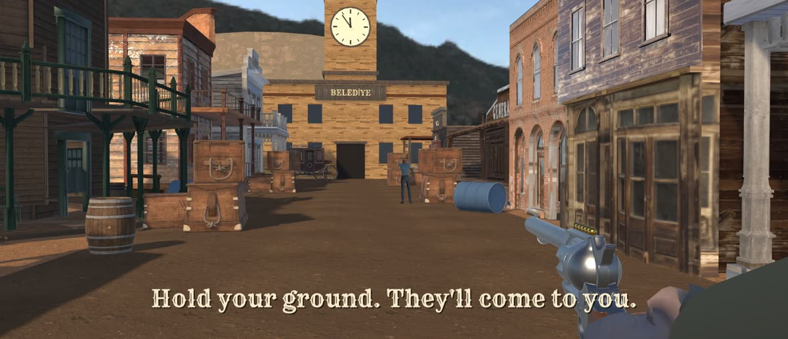
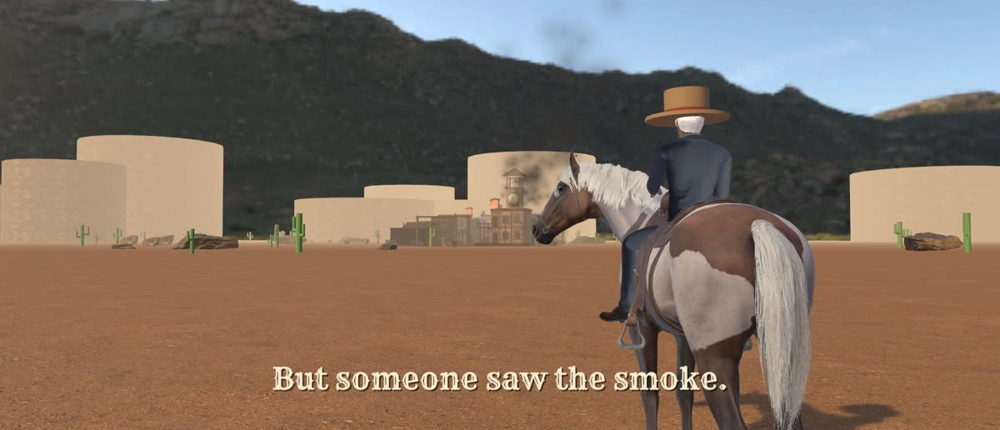

The sheriff is dead and no help is coming. When the noon bell rings, Black Jack's gang takes the town – and you are all it has left. Hold your ground in the main street, take down the outlaws as they appear on balconies, rooftops and behind crates, and spare the innocent townsfolk. Every fight ends in a duel under the clock tower: keep your hand still, listen for the bell, then draw.


Features
- 10 story levels and an endless mode
- Quick-draw duels against 11 different gunslingers
- 4 weapons: dual revolvers, long-barrel revolver, Winchester rifle, double-barrel shotgun
- 3 difficulty levels and global leaderboards
- Play standing or seated
- 11 languages: English, Türkçe, Español, Français, Italiano, Deutsch, Português, Русский, 中文, 日本語, 한국어
Türkçe
Şerif öldü, yardım gelmeyecek. Öğlen çanı çaldığında Kara Jack'in çetesi kasabayı alacak ve kasabada bir tek sen kaldın. Ana caddede yerini koru, balkonlardan, çatılardan ve sandıkların arkasından çıkan haydutları vur, masum kasabalıları koru. Her çatışma saat kulesinin altında bir düelloyla biter: elini kıpırdatma, çanı dinle, sonra çek.